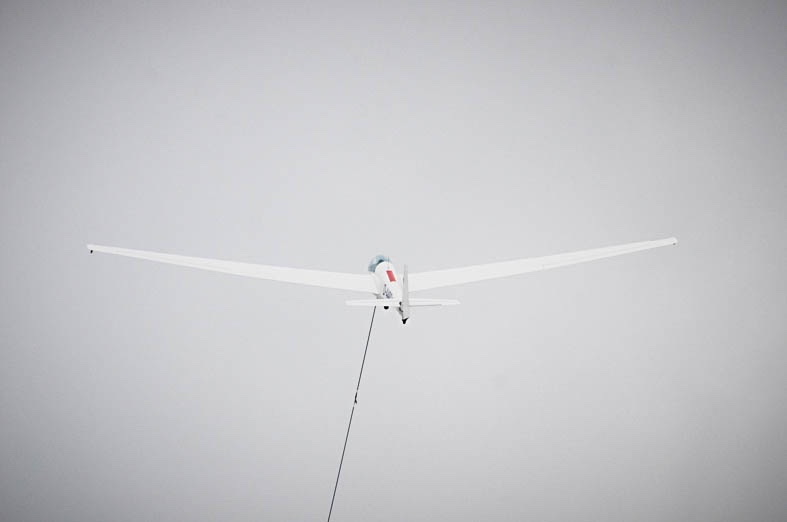
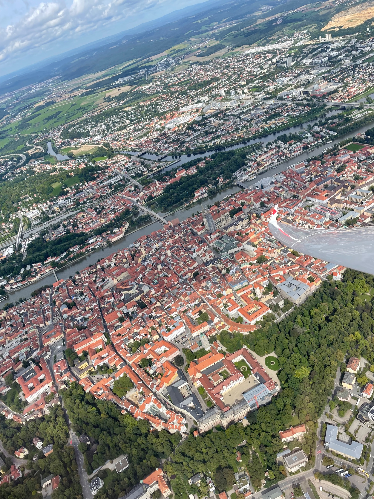
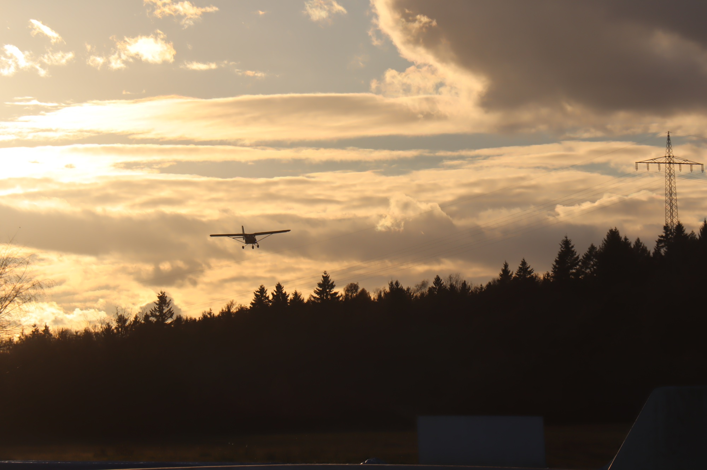
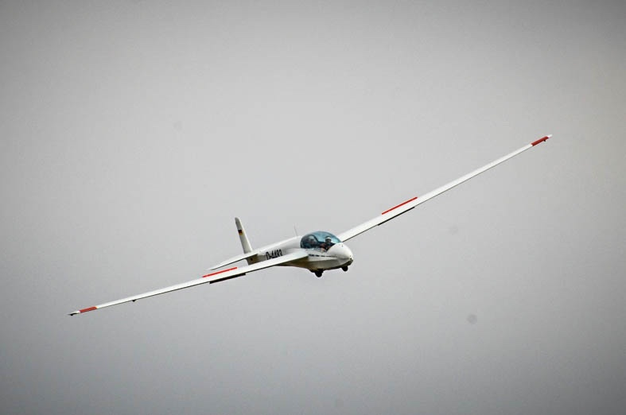
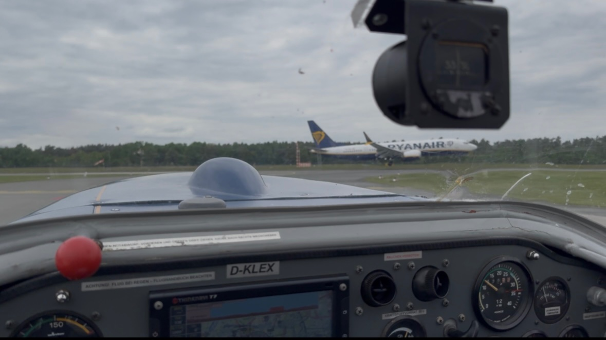
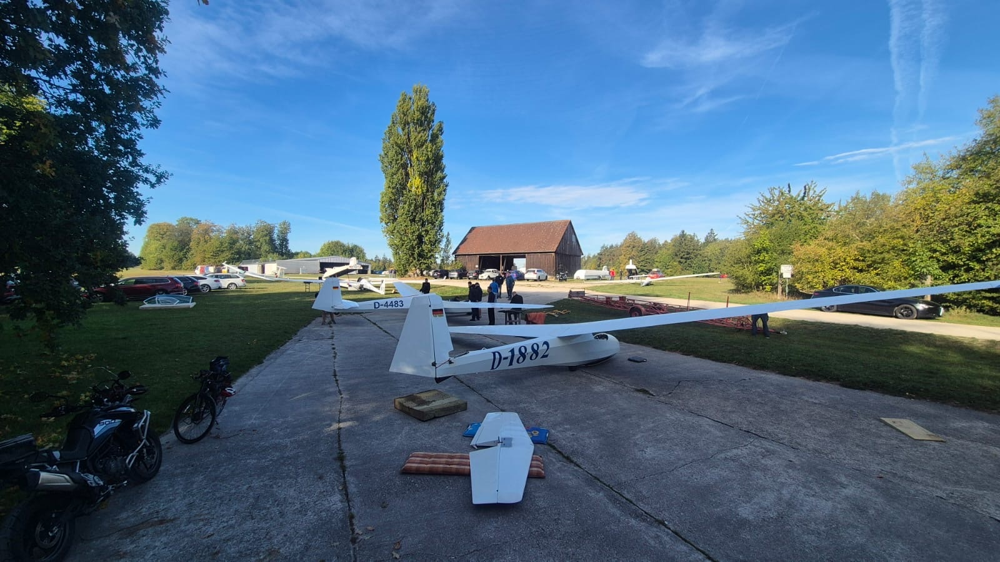

Lautlos durch die Luft gleiten, die Welt von oben sehen – oder die beste Achterbahn der Welt einfach selbst steuern? Beim LSV Regensburg wird dein Traum vom Fliegen wahr. Du brauchst keine Vorkenntnisse, nur Lust aufs Fliegen und auf eine Gemeinschaft, in der alle mit anpacken.
Schritt für Schritt
Dein Weg ins Cockpit
Vorbeikommen & Schnupperflug
Komm an einem Flugtag zum Flugplatz Oberhinkofen. Wir zeigen dir alles und nehmen dich bei einem Schnupperflug mit – du darfst sogar selbst ans Steuer.
Anmelden
Aufnahmeantrag ausfüllen, ein paar Formalitäten erledigen und die Untersuchung beim Fliegerarzt machen – dann geht es los.
Schulung auf der ASK 13
Du sitzt vorne, der Fluglehrer hinten und kann über das Doppelsteuer eingreifen. Schon nach wenigen Flügen steuerst du selbst. Jetzt werden Start und Landung trainiert.
Der erste Alleinflug
Nach etwa 50 Starts, wenn die Fluglehrer überzeugt sind, fliegst du zum ersten Mal ganz allein – immer mit Funkkontakt zum Boden. Ein Moment, den du nie vergisst!
Einsitzer Ka 8
Mit und ohne Fluglehrer, bei unterschiedlichem Wetter und auf längeren Flügen sammelst du Erfahrung.
ASK 21 und Discus CS
Umschulung auf moderne Segelflugzeuge aus Glasfaser – genauso einfach zu fliegen, aber mit mehr Leistung. Jetzt sind auch erste Streckenflüge drin.
Theorie im Winter
In den Wintermonaten lernst du das nötige Wissen über Wetter, Flugtechnik und Navigation für die theoretische Prüfung beim Luftamt.
Prüfung und Lizenz
Nach der praktischen Prüfung hältst du deine Segelfluglizenz in der Hand. Ab jetzt erlebst du deine eigenen Abenteuer am Himmel. Insgesamt dauert die Ausbildung etwa 1 bis 1,5 Jahre.
Samstag & Sonntag
Ein Flugtag bei uns





Nach dem Schein
Und danach? Da geht noch einiges!
Wettbewerbe
Bei Lehrgängen und Wettbewerben entwickelst du dein Können weiter – und misst dich mit anderen.
Kunstflug
Mit einer Kunstfluglizenz lernst du eine ganz neue Seite des Fliegens kennen – Loopings inklusive.
Fluglehrer
Gib dein Wissen an die nächste Generation weiter und bilde selbst neue Pilotinnen und Piloten aus.
Motorflug
Erweitere deine Fähigkeiten und steig auf Motorsegler oder Motorflugzeuge um.
Voraussetzungen und Kosten
| Mindestalter | 14 Jahre (Luftfahrerschein ab dem 16. Geburtstag), Motorsegler ab 17 Jahren |
|---|---|
| Voraussetzungen | Polizeiliches Führungszeugnis, Flugtauglichkeitsuntersuchung beim Fliegerarzt, Lehrgangsnachweise |
| Kosten bis zum Schein | ca. 3.500 € (Erfahrungswert), Sondertarife für Jugendliche und Studenten |
| Schnupperflug | Auf Anfrage möglich – am besten einfach an einem Flugtag vorbeikommen. |
| Kontakt | ausbildung@luftsportverein-regensburg.de |
Gut zu wissen
Häufige Fragen
Brauche ich Vorwissen?
Nein. Alles, was du wissen musst, lernst du bei uns – Schritt für Schritt und immer mit einem Fluglehrer an deiner Seite.
Was kostet das wirklich?
Bis zum Schein rechnen wir mit rund 3.500 € – verteilt auf etwa 1 bis 1,5 Jahre. Darin stecken Mitgliedsbeitrag, Flüge und Prüfungsgebühren. Für Jugendliche, Schüler und Studenten gibt es günstigere Tarife. Zum Vergleich: Ein Autoführerschein kostet heute oft ähnlich viel.
Wie oft muss ich am Flugplatz sein?
Geflogen wird bei gutem Wetter am Wochenende und an Feiertagen. Je regelmäßiger du kommst, desto schneller lernst du – feste Pflichttermine gibt es aber nicht.
Ist Segelfliegen gefährlich?
Sicherheit hat bei uns oberste Priorität: Die Flugzeuge werden regelmäßig gewartet und geprüft, du fliegst erst allein, wenn die Fluglehrer überzeugt sind, und es gibt immer Funkkontakt zum Boden.
Kann ich mit Brille fliegen?
In den meisten Fällen ja. Ob alles passt, klärt die Untersuchung beim Fliegerarzt – sprich uns gern vorher an.
Was ist, wenn ich erst mal nur schnuppern will?
Perfekt! Komm an einem Flugtag vorbei, schau dir alles an und flieg bei einem Schnupperflug mit. Danach entscheidest du in Ruhe.
Für Eltern
Gut aufgehoben am Flugplatz
- Ausgebildet wird von erfahrenen, lizenzierten Fluglehrern – ehrenamtlich und mit viel Herzblut.
- Am Flugplatz ist immer ein Flugleiter vor Ort, und die Jugendleitung ist Ansprechpartner für alle Fragen.
- Die Kosten sind gut planbar und verteilen sich über die ganze Ausbildung – mit Sondertarifen für Jugendliche.
- Ihr seid herzlich eingeladen, an einem Flugtag vorbeizukommen und euch selbst ein Bild zu machen.
Unterlagen zum Herunterladen
Für alle, die gleich bei uns starten wollen: Den Aufnahmeantrag ausfüllen und an den Verein schicken. Für die Ausbildung brauchst du außerdem die Ausbildungsunterlagen.
Neugierig geworden?
Dann komm einfach vorbei! Wir zeigen dir unseren Verein, beantworten alle Fragen – und vielleicht sitzt du schon bald selbst am Steuer.